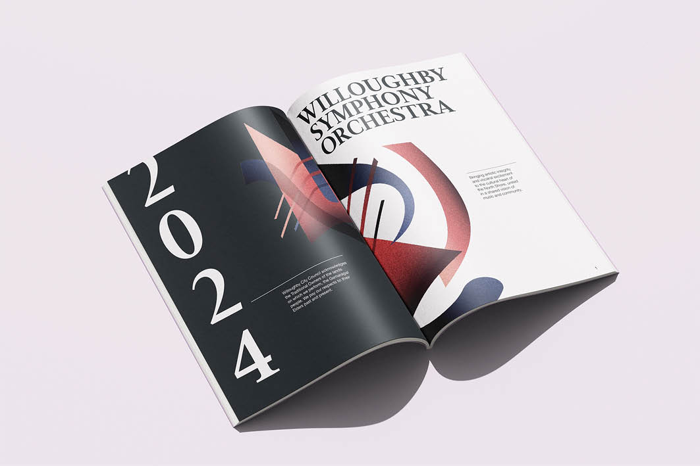
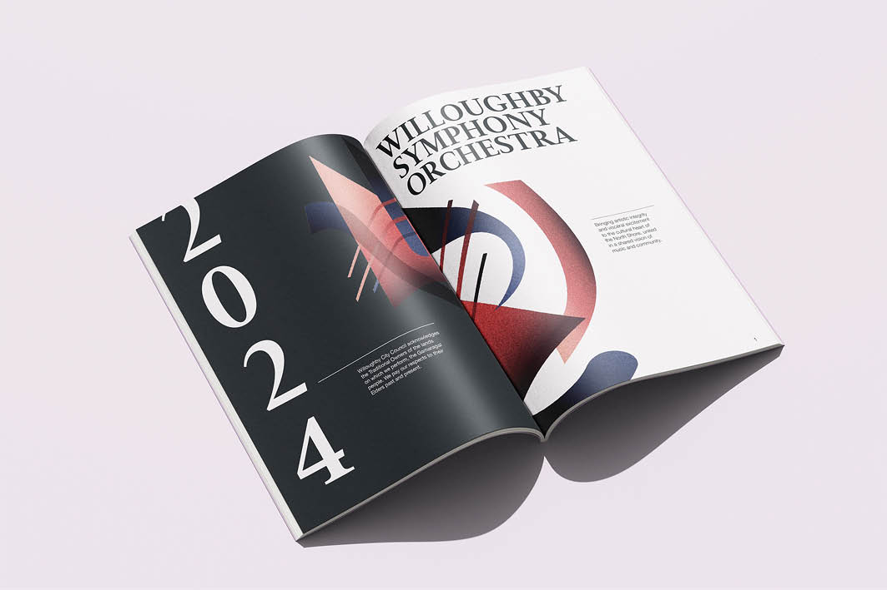

WILLOUGHBY SYMPHONY ORCHESTRA
The Willoughby Symphony Orchestra (WSO) of Sydney commissioned a new visual identity to launch their Fall 2023 season. Tasked with balancing tradition and innovation, I developed a refreshed visual identity that honors the orchestra’s legacy while giving it a bold, contemporary edge. The shapes provides en ethereal ambience which accompany the feelings conveyed by classical music. Central to this redesign is a custom-built shape library—clean, versatile, and inspired by the dynamic forms of the Cubist movement—created to ensure flexibility and cohesion across future communications. This project was realized in collaboration with Alphabet Studio, a leading creative agency with studios in Sydney and London.
Visual identity
TOOLS:
Vector
DATE:
10.05.23
OBJECT:
Shape library for the WSO 2023 flyer, commission
LOCATION:
Sydney, Australia

 
